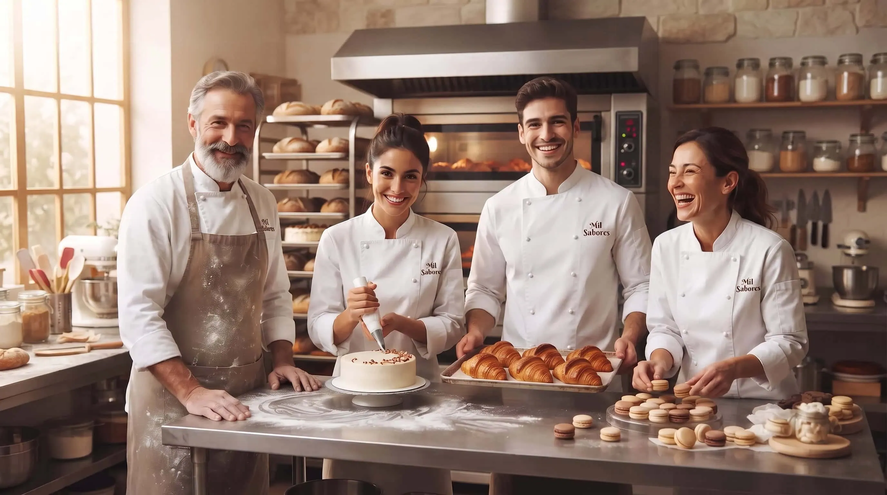
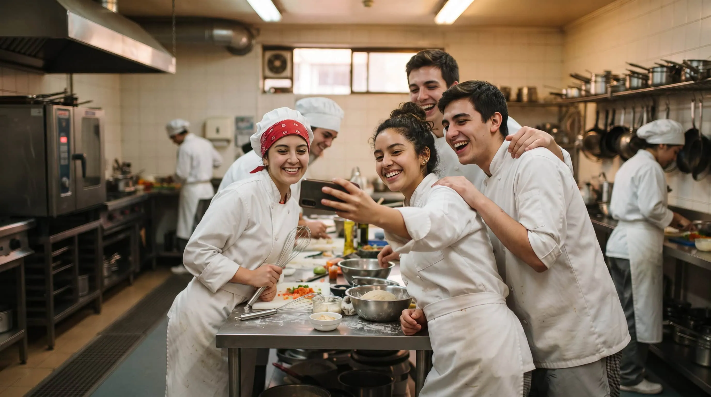

Torta Naranja Sin Azúcar
Torta ligera y deliciosa, endulzada naturalmente.
$48.000 CLP
Tortas y postres artesanales hechos con dedicación
Somos una pastelería familiar dedicada a preparar tortas y postres frescos todos los días. Elige entre una gran variedad de sabores y encuentra el producto perfecto para cada ocasión.

Torta ligera y deliciosa, endulzada naturalmente.
$48.000 CLP

Torta fresca con frutas de temporada y crema batida.
$42.000 CLP

Tradicional tarta española con almendras.
$32.000 CLP
En Pastelería Mil Sabores llevamos 10 años trabajando para llevar la felicidad a través de nuestros pasteles a tu hogar. Queremos ver a nuestros clientes felices y ser parte de esos momentos únicos en su vida.
Nuestro equipo de pasteleros comparte nuestra visión al momento de elaborar nuestros productos, y estamos orgullosos de su trabajo. De la mano de ellos, queremos seguir siendo parte de la vida de nuestros clientes.

Elaborar productos de calidad de la mano de un equipo de pasteleros comprometido y orgulloso de su trabajo.
Ser parte de los momentos únicos en la vida de nuestros clientes, llevando felicidad a cada hogar a través de nuestros pasteles.

En Pastelería Mil Sabores creemos que cada dulce momento debe trascender. Por eso, parte de nuestras iniciativas y ventas están destinadas a colaborar activamente con la comunidad local y apoyar de forma directa la formación de los nuevos talentos de la gastronomía nacional, creando un espacio de aprendizaje e innovación para los futuros profesionales.
"¡Las mejores tortas de Santiago! Pedí una de chocolate para un cumpleaños y fue un éxito total. Súper húmeda y el sabor increíble. 100% recomendados."
"Excelente servicio y calidad. Probé los postres individuales para una reunión y a todos les encantaron. La presentación es hermosa y el sabor inigualable."
"El sabor de la tradición se nota en cada bocado. Me encanta que usen ingredientes naturales. Sus tortas de frutas son mi perdición. ¡Excelente trabajo, equipo!"